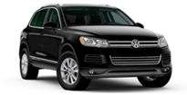
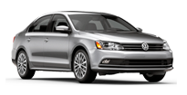
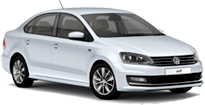
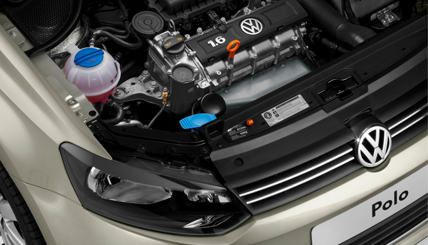

Ремонт автомобилей VOLKSVAGEN в Новочеркасске
- Квалифицированные специалисты,
прошедшие обучение по марке
VOLKSVAGEN - Оригинальные масла и жидкости,
а также качественные
неоригинальные - Всегда в наличии шины, диски и
расходные материалы для ТО
вашего VOLKSVAGEN - Оригинальные запчасти VOLKSVAGEN
и качественные аналоги проверенные
временем
Услуги по обслуживанию VOLKSWAGEN
- Регулярное техническое обслуживание
- Замена ремня ГРМ
- Замена расходных материалов
- Замена колодок и дисков
- Замена масел и тех. жидкостей
- Заправка кондиционеров
- Ремонт ходовой
- Шиномонтаж
Лучшие летние шины для вашего VOLKSWAGEN только у нас
- Volksvagen
Touareg - 235/65 R17
- 255/60 R17
- Volksvagen Jetta
- 195/65 R15
- Volksvagen Polo
sedan - 175/70 R17



- Bridgestone
- BFGoodrich
- Tigar
- Nokian
- Nordman
- Michelin
- Yokohama
- Dunlop
- Continental
- Gislaved
На другие модели VOLKSWAGEN цены и наличие уточняйте у менеджера.
+7 (988) 517-91-12
В сервисном центре «Автолюкс» вы получите грамотную консультацию ма-
VOLKSVAGEN рекомендует тех.жидкости и масла CASTROL
